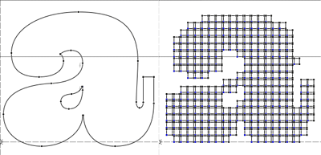

Glyph, Contour & Pen

Working with Glyph, Contour, Pen objects. Deep in the font live the glyphs. Inside the glyphs are contours, components. Inside a contour are segments and points!
Previous: fonts, next: kerning and metrics, building glyphs
Some Glyph attributes
In the previous talk we saw ways of getting fonts and glyph objects. Now we're going to see what Glyph objects can do for us. Glyphs are perhaps the most interesting object in the whole API. Some basic attributes of a glyph object:
# robothon06
# set basic attributes in a glyph
from robofab.world import CurrentFont
font = CurrentFont()
glyph = font['A']
glyph.width = 200
print glyph.width
glyph.leftMargin = 50
print glyph.leftMargin
glyph.rightMargin = 50
print glyph.rightMargin
glyph.unicode = 666
glyph.update()
A
812
0
0
(0, 0, 812, 600)
65
Some of these attributes can also be set, you can put new values in them. Why not all of them? For instance, the bounding box of a glyph is an attribute, it is useful information. But it depends entirely on the size of the contours in the glyph. There's no way in which you could set this attribute other than by changing the actual paths. Useful attributes you can set are things like the width, left and right margin:
# robothon06
# set basic attributes in a glyph
from robofab.world import CurrentFont
font = CurrentFont()
glyph = font['A']
glyph.width = 200
print glyph.width
glyph.leftMargin = 50
print glyph.leftMargin
glyph.rightMargin = 50
print glyph.rightMargin
glyph.unicode = 666
print glyph.unicode
glyph.update()
200
50
50
666
Notice the glyph.update() statement at the end. After setting the attributes to new values, the glyph data will be changed. But the FontLab interface will not have noticed your changes. For instance, the little preview in the font window might still show the old version. The update() method of the glyph object is a wakeup call for the application to refresh all glyph drawings with the new data. Note that it is just the representation that's being updated. The data itself was changed when the script was executed. Saving the file and opening it again will have the same effect in this respect.
Have a look at the RoboFab documentation on the Glyph object for more attributes and methods.
Some Glyph methods
# robothon06
# use some methods to transform a glyph
from robofab.world import CurrentFont
font = CurrentFont()
# ask a font for a glyph by name
glyph = font['A']
# now you have a glyph object
# make it do stuff by calling some of its methods
glyph.move((100, 75))
glyph.scale((.5, 1.5))
glyph.appendGlyph(font['B'])
glyph.removeOverlap()
glyph.correctDirection()
glyph.update()
Note: these will really screw up your glyph if you don't want it to be moved 100 units horizontally and 75 units vertically, then scaled 50% horizontally and 150% vertically. Then the glyph B is added, the overlap is removed, the path directions are corrected and finally the app is told something was changed.
getParent()
The Glyph object has a glyph.getParent() method. When called it will return the Font object the glyph belongs to. If it has one: "orphan" glyphs are objects which don't belong to any particular font like the result of a GlyphMath operation or glyph level interpolation. When there is no parent, getParent() returns None. You need to test for this result.
# robothon06
# iterate through a glyph's contours
from robofab.world import CurrentFont
font = CurrentFont()
glyph = font["A"]
print glyph.getParent()
<RFont font for SomeFont>
The stuff glyphs are made of
A glyph consists of contours, which in turn consist of points, right? If only it were that easy. There are all sorts of points conspiring to become all sorts of shapes. Bezier curves, Quadratic curves, open, closed, components. Sometimes it is just the point of view that's different. The Understanding Contours and Segments section of the RoboFab documentation has a couple of diagrams of the different ways of looking at the vectors in a glyph. Let's have a look at Contour objects first.
# robothon06
# iterate through a glyph's contours
from robofab.world import CurrentFont
font = CurrentFont()
glyph = font['A']
print "glyph has %d contours" % len(glyph)
for contour in glyph.contours:
print contour
glyph has 2 contours
<RContour for MyDemo Italic.A[0]>
<RContour for MyDemo Italic.A[1]>
So a Glyph object contains zero, one or more Contour objects. Let's see what secrets a Contour has:
# robothon06
# get a specific contour and view it
#through point, segment and bPoint structures
from robofab.world import CurrentFont
font = CurrentFont()
glyph = font['A']
contour = glyph[0]
print contour.points
print countours.segments
print contour.bPoints
[<RPoint for Plinc01 Plinc01.A[0][0]>,
<RPoint for Plinc01 Plinc01.A[0][1]>,
...
<RPoint for Plinc01 Plinc01.A[0][4]>]
[<RSegment for Plinc01 Plinc01.A[0][0]>,
<RSegment for Plinc01 Plinc01.A[0][1]>,
...
<RSegment for Plinc01 Plinc01.A[0][4]>]
[<RBPoint for unnamed_font.unnamed_glyph[7][0][0]>,
<RBPoint for unnamed_font.unnamed_glyph[7][0][1]>,
...
<RBPoint for unnamed_font.unnamed_glyph[7][0][4]>]
Let's have a look at these different attributes. In the end, they're all describing the same shape, the same actual points. It's just sorted in different ways for different purposes.
- contour.points: This is a list of all points on a contour. off-curve and on-curve points are presented as RPointobjects. Each RPoint has x, y, type and smooth attributes. On-cuve and off-curve points are treated as equals.
- contour.segments: A segment is an object which represents a series of off-curve points and finally one on-curve point. Though kind of abstract, segments are needed to deal with quadratic curves which can have several off-curves on a row.
- contour.bPoints: bPoints are objects which look more or less like the curve points you know from editing Beziers. One main on-curve point and two satellite off-curve points or bcps: an incoming one and an outgoing one. This is more or less the kind of point that was used in RoboFog code.
Again, please refer to the Understanding Contours and Segments to make sense of these things visually.
Finally, when you iterate through the contour.points, you get to see RPoint objects with familiar things like x, y, and type attributes.
# robothon06
# iterate through points
from robofab.world import CurrentFont
font = CurrentFont()
glyph = font['A']
for p in glyph[0].points:
print p.x, p.y, p.type
37 509 move
37 407 offcurve
119 325 offcurve
221 325 curve
323 325 offcurve
405 407 offcurve
405 509 curve
405 611 offcurve
323 693 offcurve
221 693 curve
119 693 offcurve
37 611 offcurve
37 509 curve
That looks interesting! Finally we're dealing with the stuff that letters are made of. You can now find the coordinates of every single point in the font, and change them if you want. But it looks very cumbersome to actually add shapes like this, all these contour objects, point objects. That's going to hurt, no? Yes. So, if you want to draw new forms there is a solution.
The Pen and Draw model
The pen/draw model is a very powerful concept, but it might seem a bit abstract to begin with. If you're interested in building filters, shape manipulating scripts, or programmatically draw glyphs, this is good to study. Otherwise, if you're here for the first time, just remember that there are ways to get paths into glyphs and that this is where you saw the examples for later reference.
Glyph objects have a draw() method which takes a Pen object as a parameter. All glyphs know how to draw and all pen objects have the same methods (see below). When draw() is called, the glyph instructs the pen to recreate the shapes using moveTo(), lineTo(), curveTo() commands. The pen/draw() model is a standardised way of getting to the point data in a glyph. It is also a standardised way of getting data into a glyph. The glyph doesn't have to know what the pen is doing with its information and the pen doesn't have to know where the glyph gets its data from. That's how we like things in the object oriented world.
There is a wide range of pen objects available for different things. Some pens just print the coordinates of a glyph. Some pens draw contours in a glyph, some manipulate the data, others can draw on screen under certain conditions.
How to get a pen object? A bunch of them are stored in the robofab/pens module, have a look in the source! But one of the first things you'll want to use a pen for is to construct paths in a glyph. A Glyph object has a glyph.getPen() method which will return the right Pen object for drawing in that glyph. Example:
# robothon06
# get a pen and draw something in the current glyph
# what will it draw? ha! run the script and find out!
from robofab.world import CurrentGlyph
g = CurrentGlyph()
myPen = g.getPen()
# myPen is a pen object of a type meant for
# constructing paths in a glyph.
# So rather than use this pen with the glyph's
# own draw() method, we're going to tell it
# to do things ourselves. (Just like DrawBot!)
print myPen
myPen.moveTo((344, 645))
myPen.lineTo((647, 261))
myPen.lineTo((662, -32))
myPen.lineTo((648, -61))
myPen.lineTo((619, -61))
myPen.lineTo((352, 54))
myPen.lineTo((72, 446))
myPen.lineTo((117, 590))
myPen.lineTo((228, 665))
myPen.closePath()
myPen.moveTo((99, 451))
myPen.lineTo((365, 74))
myPen.curveTo((359, 122), (376, 178), (420, 206))
myPen.curveTo((422, 203), (142, 579), (142, 579))
myPen.closePath()
myPen.moveTo((631, -32))
myPen.lineTo((629, 103))
myPen.curveTo((556, 111), (524, 71), (508, 20))
myPen.closePath()
g.update()
<robofab.pens.adapterPens.SegmentToPointPen instance at 0x65d2558>
The next example will show the use of a Pen object which doesn't construct any path, but rather it prints the instructions the glyph is calling to draw itself. Note: the stuff printed out by PrintingSegmentPen is python code too. You can use this snippet to convert a shape into python code, if for whatever reason you want to draw stuff programmatically. That's how the previous example was created: draw a shape in a glyph, print the draw instructions, write the rest of the code.
# robothon06
# get a pen and use it to print the coordinates
# to the output window. This is actually almost-python
# code which you can use it other scripts!
from robofab.world import CurrentFont
from robofab.pens.pointPen import PrintingSegmentPen
font = CurrentFont()
glyph = font['A']
# PrintingSegmentPen won't actually draw anything
# just print the coordinates to the output:
pen = PrintingSegmentPen()
glyph.draw(pen)
pen.moveTo((37, 509))
pen.curveTo((37, 407), (119, 325), (221, 325))
pen.curveTo((323, 325), (405, 407), (405, 509))
pen.curveTo((405, 611), (323, 693), (221, 693))
pen.curveTo((119, 693), (37, 611), (37, 509))
pen.closePath()
The following example uses a Pen to draw boxes as a simple rasteriser. Perhaps a bit overboard, but it illustrates what you can do with Pens and creating paths in RoboFab.
# robothon06
# rasterise the shape in glyph "A"
# and draw boxes in a new glyph named "A.silly"
#
from robofab.world import CurrentFont, CurrentGlyph
sourceGlyph = "a"
f = CurrentFont()
source = f[sourceGlyph]
# find out how big the shape is from the glyph.box attribute
xMin, yMin, xMax, yMax = source.box
# create a new glyph
dest = f.newGlyph(sourceGlyph+".silly")
dest.width = source.width
# get a pen to draw in the new glyph
myPen = dest.getPen()
# a function which draws a rectangle at a specified place
def drawRect(pen, x, y, size=50):
pen.moveTo((x-.5*size, y-.5*size))
pen.lineTo((x+.5*size, y-.5*size))
pen.lineTo((x+.5*size, y+.5*size))
pen.lineTo((x-.5*size, y+.5*size))
pen.closePath()
# the size of the raster unit
resolution = 30
# draw from top to bottom
yValues = range(yMin, yMax, resolution)
yValues.reverse()
# go for it!
for y in yValues:
for x in range(xMin, xMax, resolution):
# check the source glyph is white or black at x,y
if source.pointInside((x, y)):
drawRect(myPen, x, y, resolution-5)
# update for each line if you like the animation
# otherwise move the update() out of the loop
dest.update()

This is what it looks like.
A more in-depth discussion of the Pen protocol at the LettError wiki. More examples of using pens, and some samples using pens to filter letterforms in the RoboFab docs.
Another kind of pen
Well, it wouldn't be Python if there weren't at least two ways of doing things. The pen/draw() model draws on-curve points and only accepts off-curves as part of the curveTo() and qCurveTo() methods, there's no room for additional information. For instance a smooth flag or a name for a point (and there are good reasons to want to do that). That's where glyph.drawPoints() comes in handy. This method is similar to glyph.draw() but it takes a different pen, a PointPen. All points are drawn one by one. PointPens are useful when you want to exactly address all information of each point in a shape. Compare the output of this example with the previous one. It's the same shape. Chances are you won't need pointPens for some time, but if you start working with pens it is good to know they exist.
# use a point pen
from robofab.world import CurrentFont
from robofab.pens.pointPen import PrintingPointPen
font = CurrentFont()
glyph = font['A']
pen = PrintingPointPen()
glyph.drawPoints(pen)
pen.beginPath()
pen.addPoint((37, 509), segmentType='curve', smooth=True)
pen.addPoint((37, 407), **{'selected': False})
pen.addPoint((119, 325), **{'selected': False})
pen.addPoint((221, 325), segmentType='curve', smooth=True, **{'selected': 0})
pen.addPoint((323, 325), **{'selected': False})
pen.addPoint((405, 407), **{'selected': False})
pen.addPoint((405, 509), segmentType='curve', smooth=True, **{'selected': 0})
pen.addPoint((405, 611), **{'selected': False})
pen.addPoint((323, 693), **{'selected': False})
pen.addPoint((221, 693), segmentType='curve', smooth=True, **{'selected': 0})
pen.addPoint((119, 693), **{'selected': False})
pen.addPoint((37, 611), **{'selected': False})
pen.endPath()
Notice that a pointPen only has 3 methods: addPoint, beginPath and endPath.
Path manipulation
FontLab has path manipulation tools which let you remove overlap and add and subtract shapes. Remove overlap is available: glyph.removeOverlap(). Here is an example using the FontLab layer to subtract one shape from another to produce a third.
# robothon06
# Use FontLab pathfinder functionality to cut one glyph from another
from robofab.world import CurrentFont
f = CurrentFont()
base = f["A"]
cutter = f["B"]
dest = f["C"]
dest.clear()
dest.appendGlyph(base)
dest.width = base.width
dest.naked().Bsubtract(cutter.naked())
dest.update()
This example also sneakily introduces the naked() method of the glyph object. This method returns FontLab's own object for the glyph. We'll look at this in a bit more detail later on.